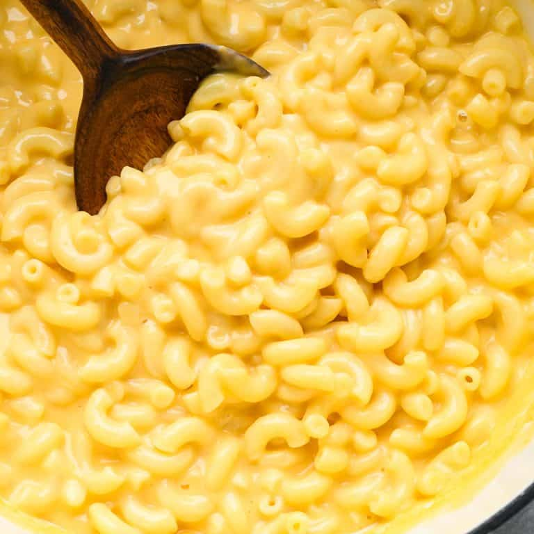

Home
Simple mac and cheese

Description
This Easy Homemade Mac and Cheese Recipe is made with 8 ingredients in 15 minutes on the stovetop (no baking
required)! Time to ditch the boxed mac and cheese for this irresistibly creamy, smooth & cheesy homemade recipe!
Once you taste this homemade mac and cheese you and your family will say “goodbye” to powdered cheese forever,
and say “hello” to this creamy dreamy real-cheese version over and over again.
Ingredients
- 227 g elbow macaroni uncooked
- 28 g salted butter
- 18 g all-purpose flour
- 1/2 tsp sea salt
- 1/4 tsp garlic powder
- 237 ml whole milk
- 58 g Greek yogurt
- 226 g shredded cheddar cheese
Steps
- Cook elbow macaroni according to package instructions. Be sure to add 1/4 tsp salt to the water used to boil
the noodles. Drain, and set aside.
- Mix flour, sea salt, and garlic powder together in a small bowl. Set aside.
- In a medium saucepan over medium heat, melt the butter.
- Add flour mixture and whisk to combine.
- Cook for 1 minute until mixture is slightly brown.
- Add 1 cup milk and whisk until the mixture is smooth.
- Add sour cream (or Greek yogurt) and whisk until smooth.
- Cook on medium-high heat until the mixture is thickened (about 3-5 minutes). Do not let it boil.
- Once mixture is thick (sticks to the back of the spatula), reduce heat to low and add cheese. Whisk until
cheese is melted and mixture is smooth. Taste and add more salt/seasoning if desired.
- Add cooked pasta to the pot of cheese sauce and stir until the sauce is evenly distributed.
- Let the mac and cheese cool for 3-5 minutes or until the cheese sauce has thickened a little bit and sticks
to the noodles. Serve warm!